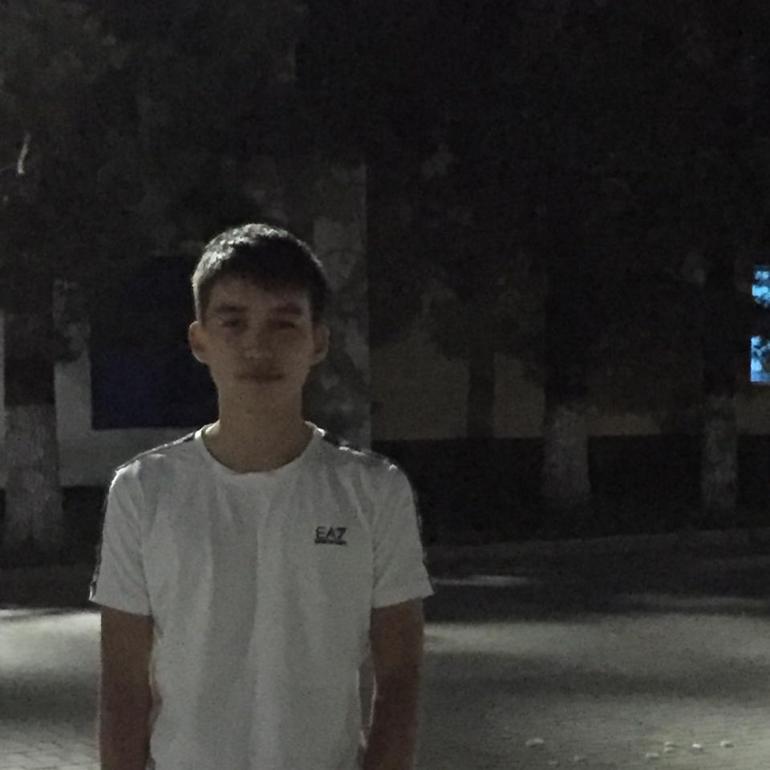

Резюме
| Суреті: |
 |
| Аты-жөні: |
Берлібек Ринат |
| Туған жылы: |
15.01.04 |
| Ұлты: |
Қазақ |
Отбасылық жағдайы: |
Үйленбеген |
| Адрес: |
Алматы қаласы |
| Email: |
berlibek.r.n.b@mail.ru |
| Телефон: |
87762169235 |
| Жұмыс тәжірибесі: |
Жоқ |
| Білімі: |
Жоғарғы білім |
| Тілдерді білу: |
Қазақ,орыс |
Мен Берлібек Ринат Нұрболатұлы 2004 жылы 15 қаңтар күні Талдықорған қаласында дүниеге келдім. Әкемнің аты Нұрболат, ал анамның Нағима. Мен үйдің үлкенімін. Менен кейін 3 бауырым бар. 2009 жылы алғаш мектеп табалдырығын аттаған болатынмын. Мектеп табалдырығында жүріп бокс, еркін күрес спорт түрлеріне қатысып аудандық және облыстық жарыстардың жеңімпазы болдым. 2021 жылы Абай атындағы мектеп гимназиясының түлегі атандым. Ұлттық бірыңғай тесттен 101 балл алып Сәтбаев университетіне IT мамандығына грантқа түскен болатынмын. Қазіргі таңда Сәтбаев университетінде 2 курс оқып жүрмін. Менің ойымша әр адамда болашыға қойған мақсаттары болады. Әрине оның ішінде мен де бармын. Менің алғашқы 10 жылдыққа қойған мақсаттарым:
- Мықты маман болу;
- Отбасы құру;
- Үй, көлік алу;
- Шетелдерге саяхаттау;
- Бизнес ашу
Артқа